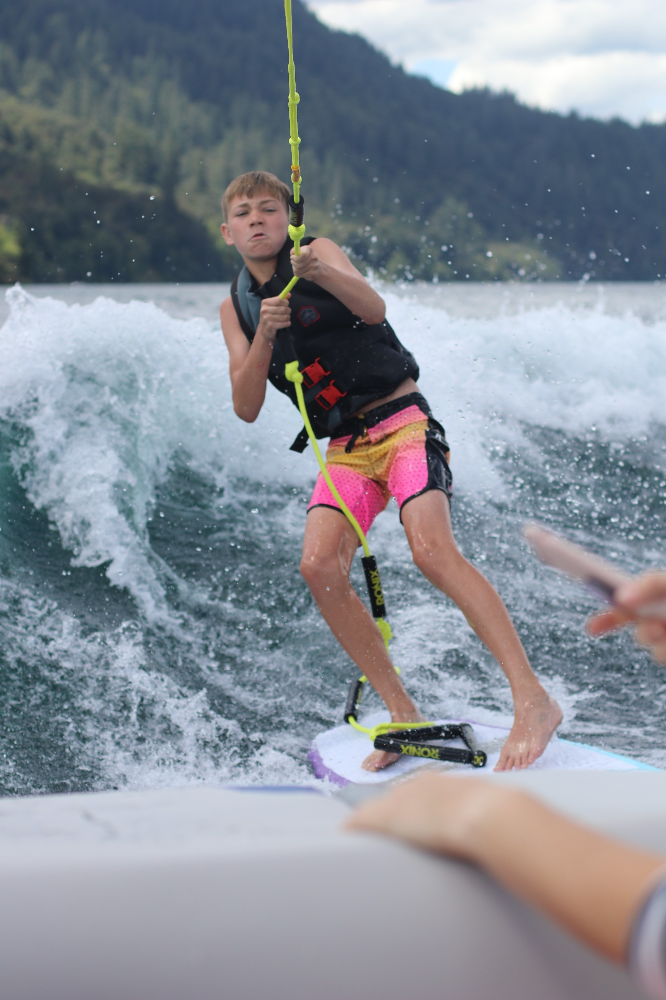
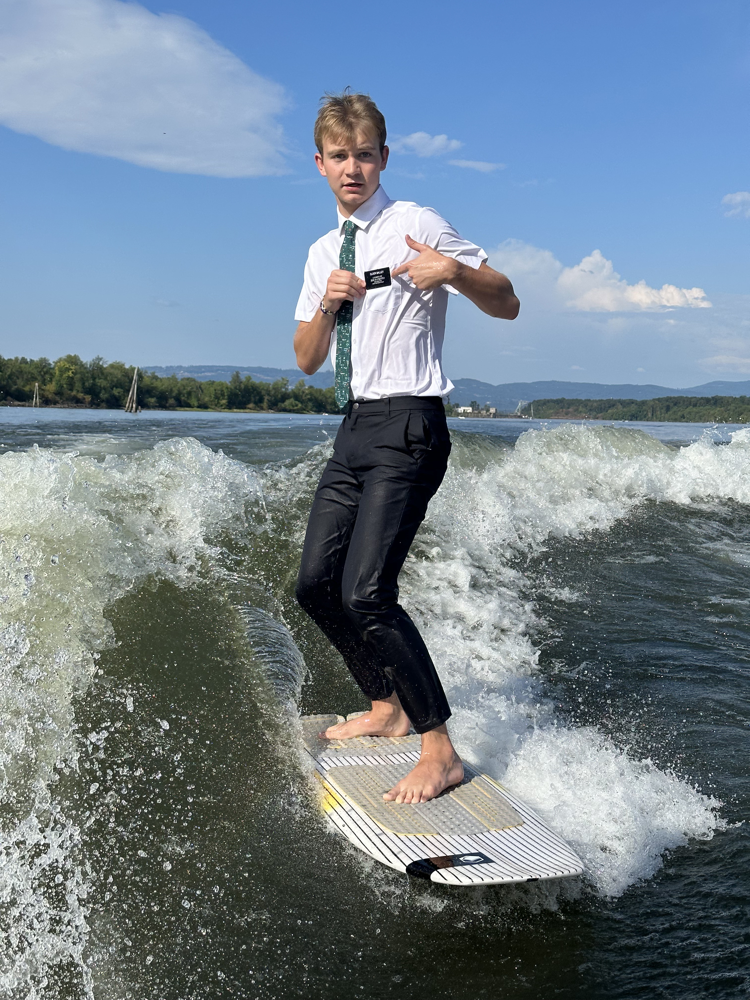
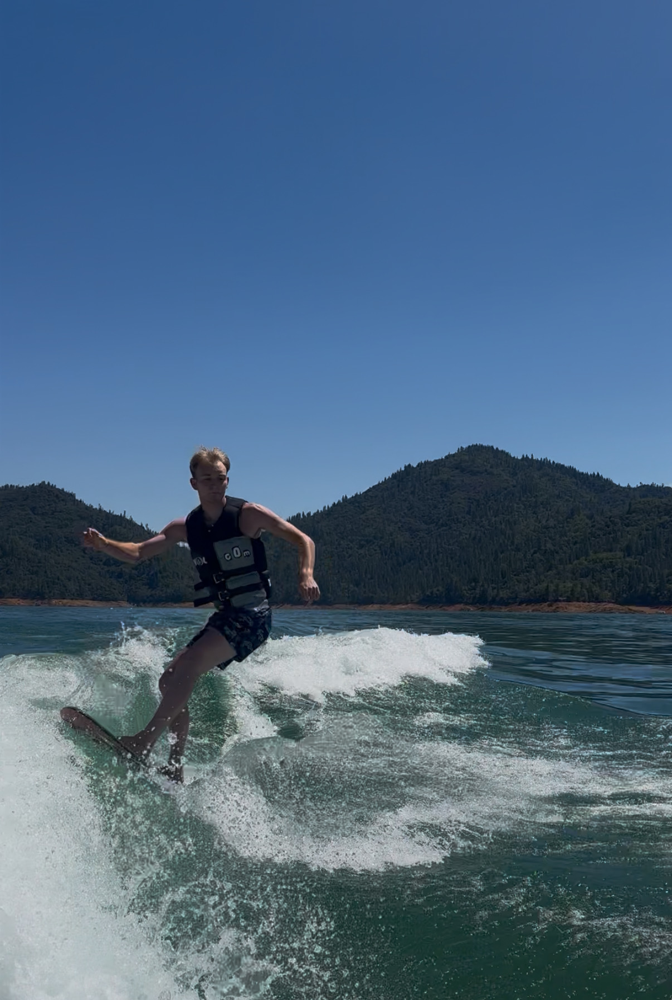

Wakesurf Progress Graph
This interactive Tableau dashboard shows wakesurf tricks ranked by difficulty from beginner to advanced.
```
Landing a wakesurf 360 takes patience, balance, and repetition. The biggest thing I have learned is that staying calm and centered works better than trying to force the spin too hard.
```Most progress comes when you stay where the wave is strongest. If you drift too far back, tricks get much harder.
A low athletic stance helps with balance, recovery, and control. It also makes spins feel more stable.
Smooth rotation usually works better than trying to snap into a 360 too fast. Staying calm helps more than overthinking.
Improvement usually comes from consistent attempts over time. Even small improvements each set add up.
These photos show part of my wakesurfing progression, from my first time trying it to more recent riding.
```
My first wakesurfing attempt.

Wakesurfing before my mission.

Wakesurfing today.
These videos show different parts of a 360. The second video is my own attempt at doing the trick, so it gives a more personal look and vibe at what learning and improving actually looks like.
```This is my own attempt at doing a 360. I wanted to include it because it shows the actual learning process, not just a polished final result.
Music changes the whole vibe of a surf session. This is a playlist I like to ride to while wakesurfing. If you don't have good music what are you doing!
```This interactive Tableau dashboard shows wakesurf tricks ranked by difficulty from beginner to advanced.
```